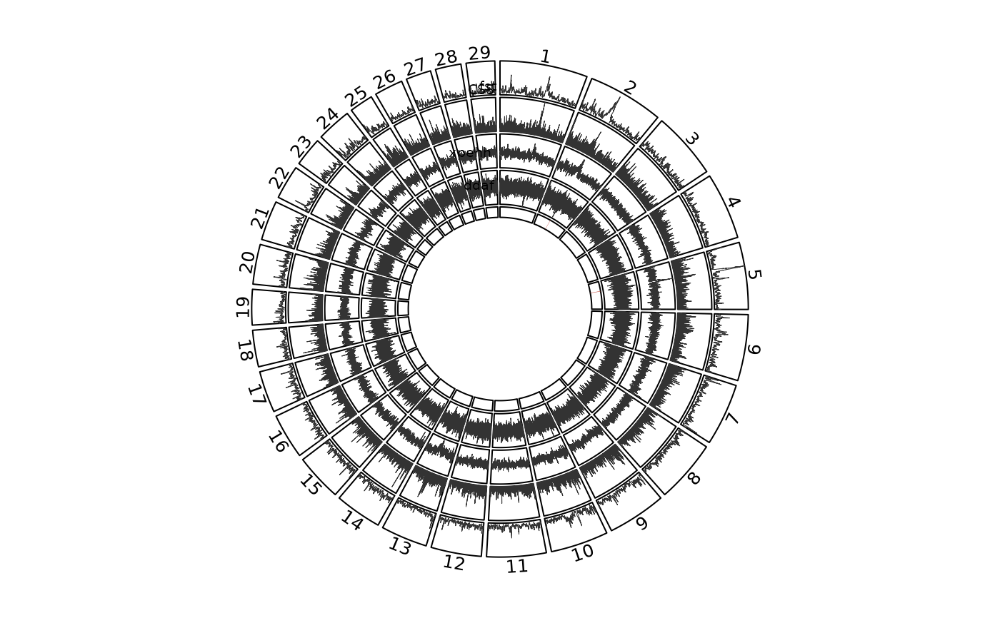

Reproduces the layout of Figure 4 of Randhawa et al. (2014): concentric tracks showing the smoothed CSS and each constituent test around the genome, with called regions highlighted.
Usage
css_circos(
x,
regions = NULL,
tests = NULL,
smoothed = TRUE,
track_height = 0.13,
labels = NULL,
title = NULL
)Arguments
- x
A
css_result, normally aftercss_smooth().- regions
Optional
css_regionsobject; highlighted on the CSS track.- tests
Constituent tests to draw as inner tracks. Defaults to all.
- smoothed
Use the smoothed columns where available. Default
TRUE.- track_height
Height of each track as a fraction of the radius.
- labels
Optional
data.framewithchr,posandnamefor outer text labels, for example candidate genes.- title
Optional title drawn in the centre.
Details
Drawn with circlize, which must be installed. The source papers used RCircos; the arrangement here is equivalent, not identical.
Unlike the other plotting functions this one draws to the active graphics device rather than returning a ggplot2 object, because circlize is built on base graphics.
Examples
# \donttest{
if (requireNamespace("circlize", quietly = TRUE)) {
data(css_sim)
res <- css(css_input(css_sim,
tests = c(fst = "high", xpehh = "high", ddaf = "high")))
res <- css_threshold(css_smooth(res))
css_circos(res, css_regions(res))
}
#> Threshold on smoothed CSS: top 0.1% at 2.1575 (47 SNPs), top 1.0% at 1.1796 (470 SNPs).
#> Note: 1 point is out of plotting region in sector '1', track '3'.

# }